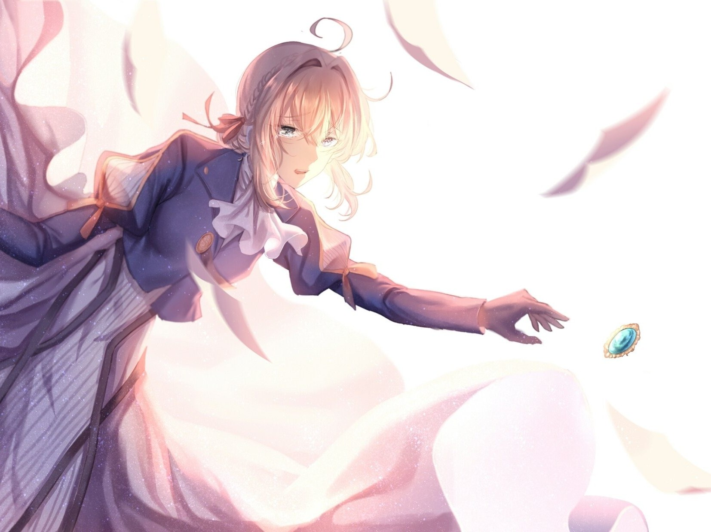

KEYWORD 01
爱：无法言说的语言
薇尔莉特一生都在处理「说不出口」的话语。 基尔伯特的「我爱你」她听不懂；委托人说不出口的思念，她要替他们说。 于是全作真正在讲的，是一件事： 语言会失效，但代笔可以替语言续命。
当第 5 话中公主与王子放下华丽辞藻、亲手写下三行字时， 「爱」才第一次以最朴素的方式抵达。
薇尔莉特一生都在处理「说不出口」的话语。 基尔伯特的「我爱你」她听不懂；委托人说不出口的思念，她要替他们说。 于是全作真正在讲的，是一件事： 语言会失效，但代笔可以替语言续命。
当第 5 话中公主与王子放下华丽辞藻、亲手写下三行字时， 「爱」才第一次以最朴素的方式抵达。
战后的人们并不缺少遗忘的理由——但《京紫》选择了相反的方向。 它让每一个委托人都在信里重新读一遍自己的过去， 让失去变成可以拿出来反复端详、反复确认的东西。
记忆不是伤口的证据，记忆是伤口愈合的方式。
作品没有回避战争的残酷，也没有让主角靠「忘记」来痊愈。 薇尔莉特走遍各地，遇到的几乎每一位委托人都在战争里失去了什么。 战争与和平的主线贯穿全剧， 她在废墟上一点点建起一座关于爱的纪念碑。
「你将不再是道具，而是成为人如其名的人。」 这句台词出现在第 4 话，却是整部作品的收束。 名字在《京紫》里从来不是标签，而是承诺—— 是「紫罗兰」这朵花，也是「人如其名」这件事。
紫罗兰（Violet）在西方文化中象征谦逊、忠诚与纪念， 而最广为人知的花语，正是「永恒的美与爱」。
这几乎就是全剧的注脚：战争夺走了一切可以永恒的东西， 只有「美」与「爱」在信件里被留了下来。 薇尔莉特这个名字本身，就是基尔伯特替她写下的一句判词—— 他相信她终有一天会像紫罗兰那样盛开。
还有一层更动人的巧合： 作品的中文译名《紫罗兰永恒花园》最初是粉丝在原作细节尚未公布时的暂译， 却意外地与作品的命运严丝合缝，后来被 Netflix 等平台正式追认。 一个「译错的」名字，反而成了最准确的标题。

「你蕴含着无法言说的情感，你囊括着世间一切的美好，
你存续着字句之下的愿望，你传递着天各一方的期盼。」
——「Violet Snow」歌词（中文版）
写一封信要花时间，落笔前会反复斟酌。 正是这份「慢」，逼着人把真正想说的话想清楚—— 这也是「代笔」这一职业存在的意义。
信可以由别人代写，这是《京紫》最独特的设定： 它承认了「有些话由我说不出口，由我说更合适」。
「不存在不必送达的信件。」 一封信在路上的时间，就是思念被认真对待的证明。
生活在即时通讯时代的我们，其实很少再「写信」了。 但《京紫》提醒我们的，其实不是书信这种形式， 而是那一颗愿意把心里话说出来、并送到对方手里的心。
若有一天你也想写一封信——写给未来的自己、写给远方的朋友、写给那些来不及说出口的话—— 那就已经足够了。 因为重要的从来不是纸和笔，而是那个决定提笔的瞬间。